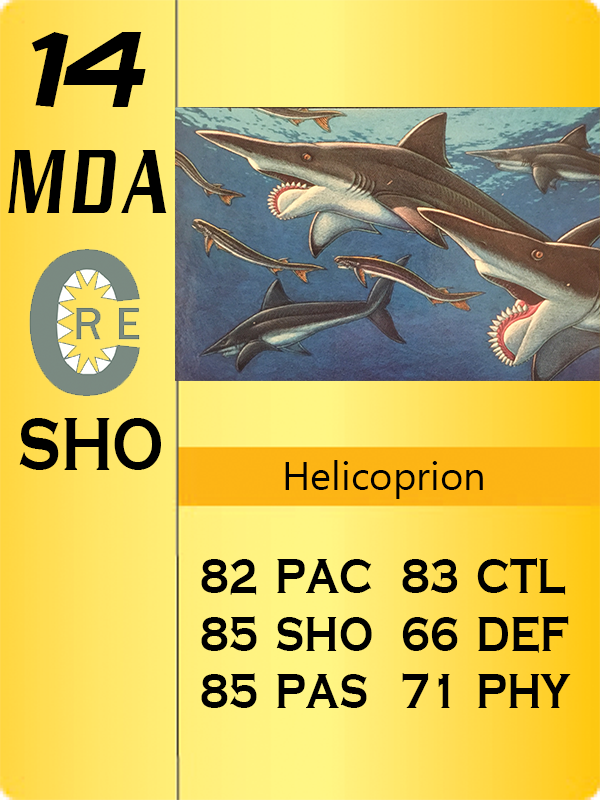
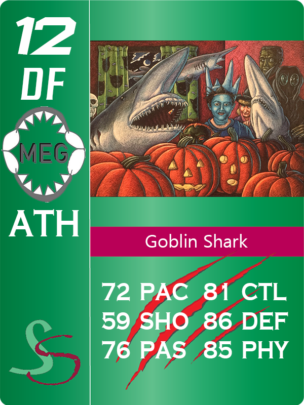
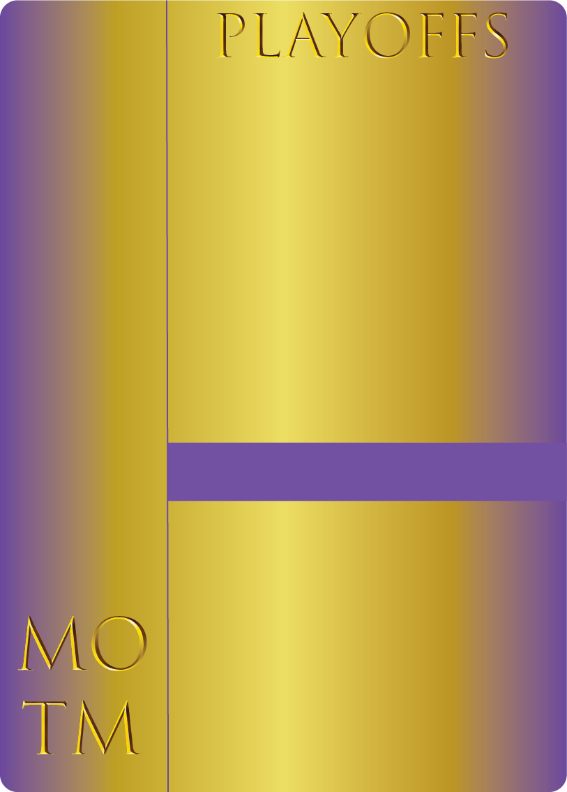
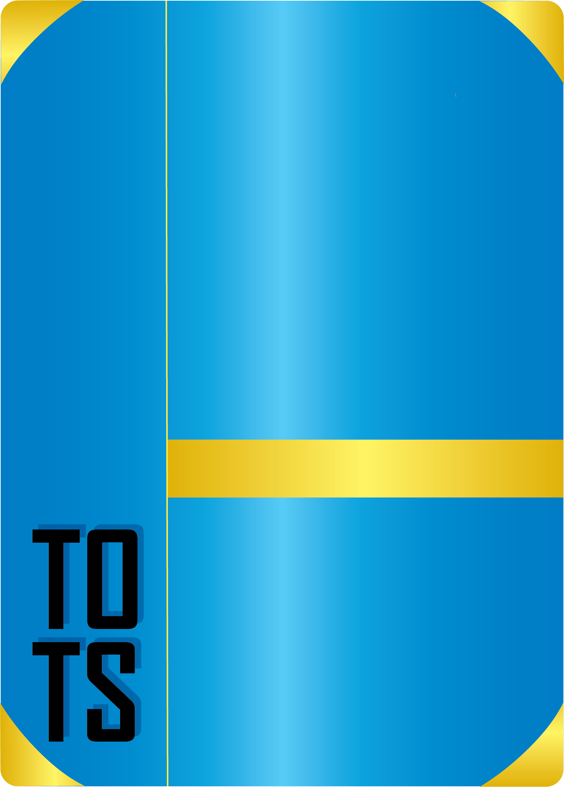

These are the best games I have been a part of creating. Each game will consist of a short description of the game, the programs used to create them, my role in the game's creation, the skills I used and developed while making the game and a short description of the context around the game's creation.
Game Description: Distractions is a short point and click game about going to school and getting distracted by your phone. Check out all the cool features on your phone like social media that changes throughout the day and simple but engaging games, but don't be late for class! And make sure to pay enough attention in class too, you don't want to fail the test!
Personal Reflection: Distractions was created as a group of 2 in about 6 weeks as the final project for a class about everyday stories in games. I did most of the coding and gameplay design while my partner did all of the art and helped with game design and coding too. This project went through a lot of iterations to get to the version it is today and it turned out better than I ever thought it would. I'm extremely proud of the simplicity and accessibility of the game to players regardless of computer fluency. My favorite part of showing this game to players is seeing the different approaches people take on their first playthrough. Some players get distracted easily and go to school late or don't notice that the whiteboard keeps changing, and some of them completely ignore the phone the first time through.
Programs used: Discord, Spreadsheets and documents
Skills developed: Communication, Creativity, Flexibility, meeting deadlines, making clear and well-defined rules
Game Description: The MSFL is a currently live sports management style game that I run. Managers build their team of marbles, train them to fit their team's needs and compete in a schedule of events throughout each season, earning points through their placements in events. The team with the highest point total at the end of each season are the champions. The marbles have 10 different active stats and some other stats that are hidden from the players. Managers build their teams of marbles through multiple methods like rookie drafts, trades and a salary cap and free agency system.
Personal Reflection: This game is so much fun to run. Events are held weekly and simulated by me after the teams select their marbles, then I commentate them as if they are happening live to communicate the event results to the players. Watching how the players manage their teams and share their thoughts while playing is very cool as the host. This idea isn't fully original, the concept of a marble sports league comes from the Youtube channel "Jelle's Marble Runs" and the concept of a simulated league in sports management style is from a similar league I am in as a player. That league was on hold for a long time and during that time I had my own ideas of things I wanted to change and add to the game. I also just wanted to run my own league with both new players and players from the other league, so I did.
Game Description: Shadow Chase is a 2D platforming survival game where you find yourself running from your own shadow. Your shadow mimics the exact movements you make shortly after you, so you'd better keep running! Navigate through the levels while constantly being chased, avoid the hazards and don't run out of breath. Good luck.
Personal Reflection: Shadow Chase is my senior capstone project which I have been sometimes working on in a group since January 2024. Our group changed between two different classes and a couple members, including me, are working on finishing a full demo for the game. My main role in this group has been as the Producer, so my main responsibilities have been communicating with the group about next steps and progress, running playtests to gather feedback and share it with the group, making difficult scoping decisions, accounting for all group members' current ability to work and making sure all members are enjoying working on the project. Our lead artist unfortunately had some lingering problems with pain in their hands throughout the second class quarter working on this project, so I made decisions like removing plans to redo the character animations and assigning the required art to a different group member. Working on this game has taught me a lot about working on a team to accomplish a shared goal and vision with everyone's best ideas.
Game Description: Thirteen is a short point and click puzzle game where you wake up in a mysterious room and must find your way out. Can you find and solve the puzzles and figure out where you are?
Personal Reflection: This project was developed over the course of 3-4 weeks in a group of 6 people. Thirteen's development project was very turbulent for a multitude of reasons. Our group formed pretty late into the class' schedule and was finalized just a couple days before Thanksgiving Break. Barely any progress was made besides ideas for the game before the break and we all didn't have the time or motivation to work during the break due to the quarter system at UC Santa Cruz being pretty demanding. Our original plan was to make a 3D puzzle game where the player could walk around and find clues with elements of time travel in the gameplay loop, but due to both a lack of time and the severe limitations of GDevelop those plans had to change fast and as the Producer I had to make those calls. As we neared the deadline our puzzle designers and artists had good progress, but the group members responsible for technical aspects, including me, were falling far behind due to being stuck on trying to make 3D work and general unfamiliarity with GDevelop. The last week was a scramble to get the puzzles working and finish some sort of story, but thanks to me and one other group member the game turned out playable and showcased some good ideas and art.
Skills developed: Mechanic design, HTML and JavaScript Coding, Teamwork
Game Description: Pixelpocalypse is an endless 2D shooter roguelike where you must try to survive an ever-increasing hoard of zombies and giant mutants by collecting power-ups that appear as you continue to survive. The easy controls, simple pixel art and lack of violent visuals and blood make this game a simple and familty friendly way to experience the extremely popular zombie survival shooter genre.
Personal Reflection: This project was developed as the final project for a class teaching Phaser I took in my junior year of college. It was completed in about 5 weeks with a development team of 4. Our aim was to make a simple but fun endless game similar to old flash games that we would have played in school in the early 2010s. We planned for both an endless and story mode, but the story mode was scrapped for time to make sure the endless mode was polished and a fully complete experience. Maybe the story mode will be made at a future date. My high score is 1435, can you beat that?
Skills developed: HTML5 and JavaScript Coding, Scoping
Game Description: Football Runner - Endless Yards is an endless runner game where you are a running back in an American football game trying to run as far as possible while defenders try to tackle you. Dodge the defenders with help from your blocker and get as many yards as you can!
Personal Reflection: This game was a solo project for the same class in my junior year of college as Pixelpocalypse above, and it was made in around 3 weeks. The purpose of this project was to practice coding in Phaser before joining a small group for the final project. The professor offered extra points for making the game about sports, and having that in mind gave me the idea to make the game about an American football running back. The mechanic of the blocker was the hardest to make but it was very satisfying to finish a simple but perfectly working project solo in such a short amount of time.
Game Description: Rapid Descent is a roguelike tile-based survival game where your goal is to survive down as many floors as possible in an infinite dungeon. On each floor there will be enemies you must fight or avoid and chests you can collect. You can fight to the ladder on the floor which will give you a bonus chest and bring you down one floor or take the portals to fall multiple floors at once. Be careful though, the enemies get stronger and faster as you fall..
Personal Reflection: Rapid Descent is the first video game I was a major part of creating. This project was with a group of 3 total students in a class during the last quarter of my freshman year in college in a timeframe of about 5 weeks. An older student in our group was the main contributor when it came to technical aspects but I was a major part of designing the game's progression. For a first project I am definitely still proud of what we made and what I contributed.
Game Description: Void Vault is a simple 3D platforming game where you navigate a nightmarish landscape to reach the top.
Personal Reflection: This game was a project for a beginner Unity development class made in a small group from the specfic prompt "Dystopian Dream" in about 3 weeks. This project served as a final showcase of what we learned in Unity.
Writing and Editing/Content Creation Projects
These are some projects that I would consider as content creation projects that showcase my writing and video/audio editing skills.
Elven Battle - A simple Choose Your Own Adventure game where you control an elf battling against the evil dwarves. Will you succeed or fail your mission? Or will you discover all the endings? The choice is yours! This simple game uses Twine and was created as a class assignment in about 2-3 weeks.
My Gaming Youtube Channel - I have been making Youtube videos for over 6 years and watching Youtube for even longer. I'm very proud of my progression as a video creator and the improvement is very noticable between my years of videos. There are two videos that I want to highlight on the channel. "Dominating a Minecraft Hunger Games Event" is my one of my favorite videos, it uses music along with the gameplay to highlight intense moments and smart cuts to keep the viewer engaged. My most viewed video, "DELTARUNE - How to get the "Pacifist" Ending", is over 4 years old so the editing is less impressive, but the reason it became popular is because the video topic was very searchable for some time. Deltarune is a game that is released in chapters, so just before the release of the second chapter interest in the first chapter greatly increased, bringing traffic to my video about one of the hard to find secrets in the chapter.
My Marble Racing Youtube Channel - At the beginning of 2023 I started a second Youtube channel for videos about the Jelle's Marble Runs channel, a channel that makes high-production marble competitions. On this channel I have made videos about those competitions and the teams and marbles competing in them, including this 2 part project that took a lot of work including an 18 page video script. I also have my own marble racing competiton planned which will be posted on this channel when it is complete.
Marbles Today Podcasting(second link) - I also co-host and edit a podcast about the Jelle's Marble Runs channel. Each long form episode takes around 3 hours to edit depending on the length of the recordings and the shorter news episode took less time to edit but more effort to script and get voice lines from other participants.
Marbles Today Newspaper - Also related to the Jelle's Marble Runs channel, I have written a few articles for the Marbles Today Newspaper organized by my friend who goes by Pastelle. The two Issues I worked the most on are Issue 26 and 27 under the "Marbula One Season 4" section.
Website Projects
Here are some of my favorite website projects! Besides the first two entries, these were created during my time with Code Nation.
Video Game Archive - A collaborative project for a web development college class which uses the RAWG video game API to display information about thousands of video games. The website is sortable by game genre and has a fully funtional search feature.
Save the Oceans - A small website created collaboratively during my summer internship with Code Tenderloin dedicated to saving our oceans. It has some information about why our oceans need our help and a link to donate to help out!
Tic Tac Toe - Virtual Tic Tac Toe so you don't have to waste paper or download an app!
RockPaperScissors - This is a classic game of Rock, Paper, Scissors, but with a twist! This game is against the computer, with no way to tell what it will pick!
Digital Art and Animation
I have created a lot of projects using Adobe programs including Photoshop and Illustrator. Here are my best works subcategorized by topic! Most of these projects were created as classwork.
EA Ultimate Team inspired Card Designs | Programs used: Photoshop and Illustrator

I have liked sports trading cards and collectable card based games for a long time and the concept of the popular EA Sports gamemode Ultimate Team, where the player collects cards to make up their team, is a concept I am interested in. These cards are my own designs based mainly around FIFA/EA Sports FC Ultimate Team cards, but instead using sharks!